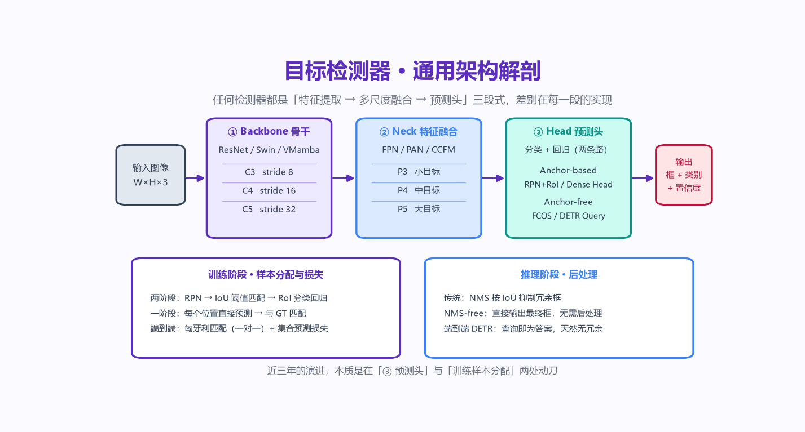
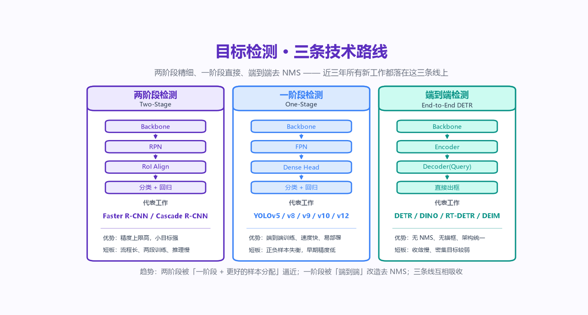
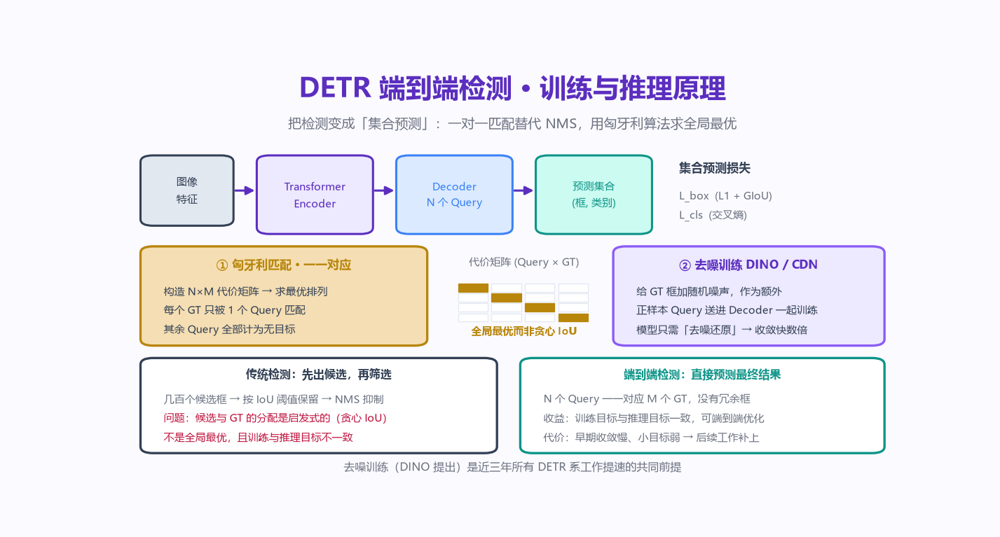
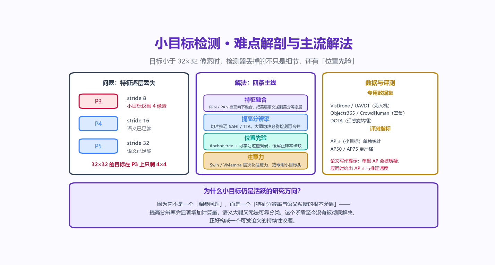
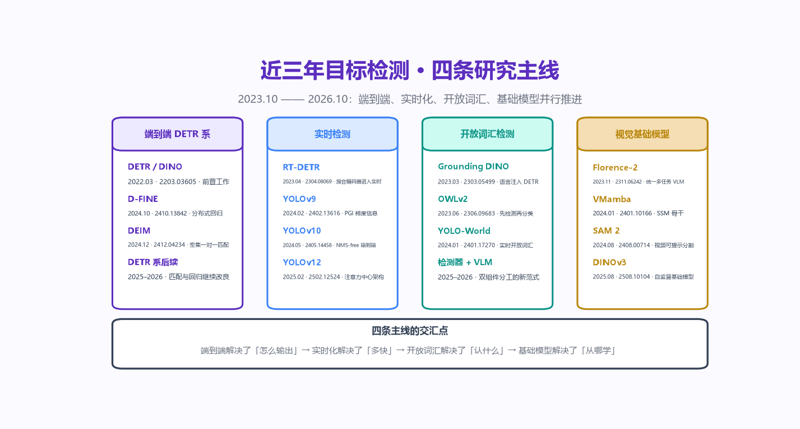

检测器怎么搭、这几年论文改了什么、哪些方向还值得做—— 一页讲清检测器的三段式架构，30 篇 arXiv 论文逐篇拆解核心思想与创新点， 配 9 张自绘原理架构图，最后落到可复现的实验路线与可直接开题的选题清单。
特征提取 → 多尺度融合 → 预测头。近三年所有新工作，改的都是这两三段里的某一处。

读论文时先把这张图摆出来，问自己三个问题： 这篇论文动的是哪一段？是训练侧还是推理侧？ 几乎所有检测论文都能被塞进这个框架里。

写综述时，这张表是最好用的骨架：按路线分类，而不是按年份罗列， 读者才能一眼看出每个方向还缺什么。
把检测变成「集合预测」：一对一匹配替代 NMS，用匈牙利算法求全局最优。 这张图是后面所有 DETR 系论文的地基。

构造 N×M 代价矩阵（分类损失 + L1 + GIoU），用匈牙利算法求全局最优排列，而不是传统检测那样按 IoU 贪心阈值分配候选框。每个 GT 只被 1 个 Query 匹配，其余 Query 全部记为无目标——这就是「无冗余框」的来源。
给 GT 框加随机噪声，把这些「带噪框」当成额外正样本 Query 一起送进 Decoder。模型只要学会「去噪还原」，收敛速度就能提升数倍——DETR 原本需要 500 epoch 才能训好，加了去噪之后 12 epoch 就够。
DEIM 改的是匹配（密集一对一 → 更快收敛），D-FINE 改的是回归（L1 单点 → 细粒度分布细化 → 更准定位）。两件事在数学上彼此正交，因此可以叠加——这正是写文章时最顺的一条叙事线。
30 篇论文，逐篇给出核心思想、创新点、代表性指标与「写文章时该怎么引用」。 全部论文标题、作者、发布日期与 arXiv 编号均取自 arXiv 官方 API，可直接核对。
严格意义上的近三年窗口是 2023-10 → 2026-10，落在窗口内的共 21 篇，标记为
近三年窗口内。
另外 9 篇 是这条技术路线上不可绕过的奠基前置工作
（DINO、RT-DETR、Grounding DINO、OWLv2、Florence-2 等，最早可追溯到 2022 年），
标记为 奠基前置。
把它们放进来是有意的：近三年的每一篇工作，都在引用和修改这些前置工作。
不引用前置工作，综述就断了链条——这也是审稿人最容易质疑的地方。
目标小于 32×32 像素时，检测器丢掉的不只是细节，还有「位置先验」。 这是一个适合持续发论文的议题。

它不是一个「调参问题」，而是特征分辨率与语义粒度的根本矛盾：提高分辨率会显著增加计算量，语义太弱又无法可靠分类。这个矛盾至今没有被彻底解决，因此每一年都有新论文。
特征融合（FPN / PAN 自顶向下）· 提高分辨率（SAHI 切片推理、TTA）· 位置先验（anchor-free + 可学习位置编码）· 注意力（Swin / VMamba 层次化注意力、专用小目标头）。
单报 AP 一定会被质疑。必须同时给出 AP_s（小目标）与推理速度，并在 VisDrone / AI-TOD / UAVDT 上验证——否则审稿人会认为你没有真正解决小目标。
端到端、实时化、开放词汇、基础模型——四条线并行推进，并在 2026 年开始交汇。

这四个实验按顺序做完，学生能独立复现近三年的代表性工作；老师能直接在此基础上派生自己的论文。
先用最朴素的两条路线跑通，理解「候选框 → 分类回归」与「密集预测」的差别。
理解集合预测、匈牙利匹配与去噪训练这三件事，是 DETR 系所有后续工作的前提。
验证「匹配机制」与「回归形式」两条改进轴可以独立叠加——这是最好讲的一个故事。
把前面的模型放到无人机小目标场景上，顺带摸清这个方向的真实痛点。
按「投入产出比」排序。难度标签：🟢 硕士一年级可做 · 🟡 需要一定工程积累 · 🔴 需要算力或新数据。
DEIM 主张密集一对一匹配带来更快的收敛，BUTR（arXiv:2610.33430）则用实验指出 动态查询的主要作用其实是预算分配而非精细选择——这两个结论未必矛盾。 系统地做一组「匹配策略 × query 预算」的二维消融，是一个工作量可控但结论有价值的题目。
把 ConvNeXt、Swin、VMamba、TransNeXt、VGTok 统一接到同一个 DETR 框架下， 在小目标与密集目标上做横向对比。 「特征质量 → 检测性能」的传导路径目前缺少系统结论，是一篇扎实的短文。
FocusOVD（arXiv:2610.27479）只做了 2026 年 10 月这一篇，说明这个交叉方向还很空。 开放词汇方法普遍在 COCO-OVD 上刷分，但很少认真报告 AP_s 与长尾小类别。 补上这一块，并给出「类别新颖度 × 目标尺度」二维评测，是很自然的一个缺口。
DiffusionDet（ICCV 2023）与 FlowOVD（arXiv:2606.00782）说明「把检测当作生成过程」是可行的， 但这条线近三年明显比 DETR 线冷。值得做的是：在同框架下对比集合预测与扩散去噪， 并回答一个具体问题——生成式范式在密集目标上是不是天然更强？
YOLOv9（梯度信息）、YOLOv10（双重标签分配）、DETRNN（查询排序）本质上都在处理同一件事： 让训练时看到的东西和推理时输出的东西一致。 把这三条路线放进同一个评价框架里（正样本分配的一致性度量）， 是一个有观点、且能写成综述的题目。
通用 OVD 的论文已经很多，但行业场景下的开放词汇评测几乎空白。 挑一个真实行业（电力巡检、港口、养殖、零售货架），构建带真实长尾类别的开放词汇基准， 并给出基线方法。数据与评测本身就是论文的贡献。
标题、作者、日期与 arXiv 编号均取自 arXiv 官方 API 原始返回，可直接照抄引用。
引用格式示例：Zhang H., Li F., Liu S., et al. DINO: DETR with Improved DeNoising Anchor Boxes for End-to-End Object Detection. ICLR 2023. arXiv:2203.03605.
机器可读的完整元数据（含作者全列表、摘要、更新时间）见仓库中的 data/object-detection-papers.json。
目标检测专题可作为 SKC5053 深度学习课程的扩展模块， 或 FDE 培训的进阶实战环节——每个实验都有可运行的代码与评测脚本。